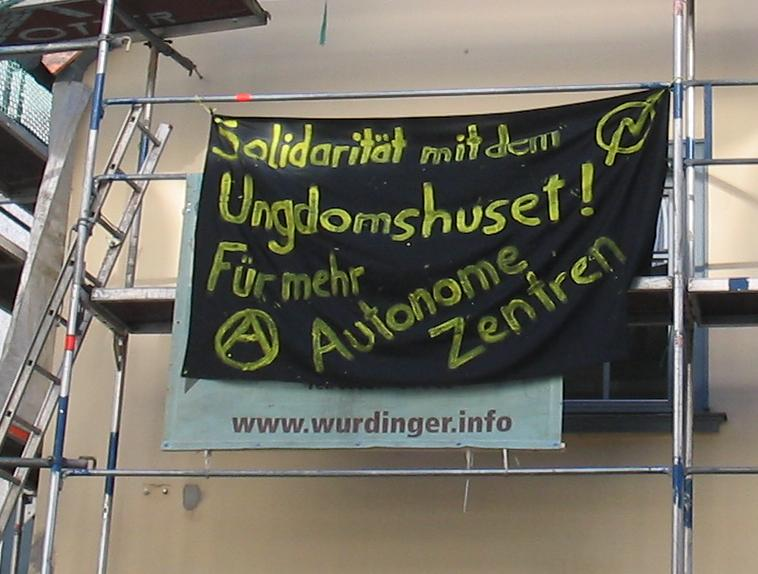

Die Zeit um die Gipfelproteste um Heiligendamm war geprägt von einem Medienhype, der uns die fantastischsten Dinge vermitteln sollte. Clowns griffen angeblich PolizistInnen mit Säure und Einwegspritzen an, der ominöse schwarze Block tauchte zufällig immer dann auf, wenn die Bullen prügelten und Menschen bewaffneten sich mit Mollies und Wurfgeschossen, die mit Rasierklingen und Nägeln gespickt waren, hieß es. Der Medienmaschinerie ist nichts zu schade, um den legitimen Widerstand gegen die Politik der G8 zu diffamieren. Hier eine Sammlung einiger Lügen, die den Weg in die Medien fanden oder dort entstanden.[mehr]>>
Archiv der Kategorie 'worldwide'
In der Nacht vom 10. auf den 11.5.2007 kam es in Aschaffenburg offenbar zu Aktionen bezüglich des Verkaufs der Köpi und der Repression gegen G8-Kritiker [mehr]>>
Am 9. Mai hat das BKA dem hohen Fahndungsdruck entsprochen und bundesweit 40 Objekte durchsucht. 900 Polizeikräfte waren eingesetzt um Privatpersonen und linke Projekte einzuschüchtern. Ermittelt wird nach §129a: “Bildung einer terroristischen Vereinigung zur Verhinderung des G8-Gipfels”. Hintergrund sind Aktionen militanter Gruppen, die Sachschäden gegen Einrichtungen der Bundesregierung und der Wirtschaft verüben. Der §129a wird als Vorwand zur Gewinnung von Informationen angewendet. Nicht mal 2% aller Ermittlungen führen zu Verurteilungen. Auf den Punkt bringt es die Bundesstaatsanwaltschaft selbst: “Die heutigen Untersuchungen sollten Aufschluss bringen über die Strukturen und die personelle Zusammensetzung von diesen Gruppierungen, und dienten nicht in erster Linie zur Verhinderung von konkreten Anschlägen. Dafür gab es keine Anhaltspunkte”.[mehr]>>
Als Reaktion auf die Durchsuchungen kam es Bundesweit und International zu Dutzenden Spontandemos, wobei die größte in Berlin mit 5-7000 Teilnehmern stattfand. Einen Überblick über die Ereignisse des gestrigen Tages findet ihr hier
Solidarität ist eine Waffe. Wir sehen uns in Heiligendamm – JETZT ERST RECHT!
Jingle gegen Gewalt – hört mal rein!
Ein Journalist traf in Ungarn bei einer nationalen Veranstaltung führende NPD-Funktionäre. Die Aufnahmen zeigen sie bei einem antisemitischen und rassistischen Konzert – und beim Hitlergruß. Der Parteivorsitzende Udo Voigt trat im Vorfeld als Redner auf und hat mit dem Verhalten seiner Parteigenossen kein Problem.
So weit nichts ungewöhnliches. Interessant an der Doku ist aber das der Journalist für seine geheimen Aufnahmen von Neonazi-Konzerten keine Abnehmer mehr findet, was er auf die Akzeptanz der Öffentlichkeit gegenüber Neonazis zurückführt.
Auf jedenfall sehenswert – klick
Wer sich über die aktivitäten der NPD Informieren will, dem sei der NPD-Blog empfohlen.
Eine kritische Dokumentation über die rechtsextreme NPD und deren Umfeld
Soliaktion auch in Aschaffenburg: Zum Internationalen Solidaritätstag Demonstrierten am 11.3. über 1000 Menschen in Berlin gegen die Räumung des Ungdomshuset, in Aschaffenburg hing am Sonntag gut sichtbar an einem Baugerüst in der Herstallstraße ein Transparent:

Geschichte des Ungdomshuset als mp3
Ausnahmezustand in Kopenhagen[mehr]>>
Am 01. März um 7 Uhr begannen Einsatzkräfte der Polizei das Ungdomshuset in Kopenhagen zu räumen. [mehr]>>
Wie Ihr ja sicher bemerkt habt, haben wir auszeit-news einer gründlichen Runderneuerung unterzogen.
Es sind bereits fast alle Inhalte der alten Website eingebunden. Jene könnt ihr aber noch eine Weile unter diesem Link erreichen, bevor sie ganz offline geht.
Ihr habt jetzt die Möglichkeit gezielt nach Artikeln zu suchen, zudem sind News 2 Kategorien (regional & worldwide) zugeordnet – lasst euch anzeigen was euch interessiert. In der Sidebar (-->) werdet ihr in Zukunft aktuelle bzw. themenbezogene Links und Texte finden, zu älteren News könnt ihr mit der Scrollleiste (oben) blättern oder die Suchfunktion benutzen
Natürlich gibt es auch weiterhin den Newsletter (jetzt unter Kontakt), dort findet ihr auch unseren PGP-Key um uns verschlüsselte emails zukommen zu lassen.
Kritik, Anregungen und Wünsche könnt ihr als Kommentar zu diesem Artikel loswerden oder einfach per email schreiben, wir freuen uns über jede Beteiligung am Projekt auszeit-news!
Diese Welt ist zu weit von unseren Träumen entfernt um darin widerstandslos zu leben!
Über 3000 Menschen Demonstrierten am 10.02.2007 gegen die Nato-Sicherheitskonferenz in München, einen ausführliche Nachbetrachtung dazu könnt ihr hier nachlesen, dazu gibt es noch Video
Am 24.02.2007 ist es mal wieder so weit, die Opernballdemo 2007 in Frankfurt steht an. Dieses Jahr wird von einem breiten Bündnis aus Antifa-Gruppen über Erwerbsloseninitiativen bis hin zum AStA der Uni-Frankfurt unter dem Motto „Her mit dem schönen leben – Gegen Bildungs- und Sozialabbau“ mobilisiert. Beginn der Demo ist um 15 Uhr am Baseler Platz, nähe Hbf. Und weil alleine auf ne Demo fahren langweilig ist, treffen sich interessierte Leute aus Aschaffenburg und Umgebung um 13:30 Uhr am Bahnhof/AB zur gemeinsamen Abfahrt.
In den letzten Tagen erschien noch ein Schüleraufruf
Berichte über die Opernballdemos der vergangenen Jahre: 2006 und 2005
Am Mittwoch, den 17.01.07 ging das Staatsschutzdezernat der Münchner Polizei massiv gegen AntimilitaristInnen und AntikapitalistInnen sowie gegen die unabhängige Presse vor. Von 13 Uhr bis in die Nacht dauerte die Durchsuchungsaktion, die gestern unter dem Vorwand des “Aufrufs zu Straftaten” in Zusammenhang mit Protestankündigungen zur “Sicherheitskonferenz” und zum G8-Gipfel stattfand.[mehr] >>
Göttingen: Demonstration gegen Repression
Am Samstag Mittag (21.10.) demonstrierten rund 100 Personen in Göttingen unter dem Motto „Hoch die, Kampf dem, Nieder mit, Zerschlagt“ gegen Repression und Polizeiterror. Anlass war die überall wahrnehmbare verschärfte Repression und Überwachung durch die Polizei und andere staatliche Organe. Die Demo war bunt, laut und kraftvoll. Verschiedene Aktionsformen fanden ihren Raum. So gab es eine Clownstruppe, Nikoläuse, Menschen mit Trenchcoat und Zubehör verkleidet und Mars-TV.Die Nikoläuse hatten große Schilder mit Vorsicht Kamera, um auf die Filmerei der Polizei aufmerksam zu machen. Das war der Polizei ganz und gar nicht recht. Einer der Nikoläuse wurde brutal zu Boden gebracht und festgehalten. Schließlich wurden die Personalien auch von einem weiteren Nikolaus festgestellt. Danach konnten beide, allerdings ohne die beschlagnahmten Schilder, weitergehen.
[mehr] >>
Solidarische Grüße nach Göttingen – wie die Bilder zeigen, wurde versucht der Staatsgewalt mit viel Kreativität entgegenzutreten. Das selbige nur mit Gewalt regaieren kann zeigt wie wichtig und richtig Aktionen zu diesem Thema sind. Staat hau ab! Wen das Thema interessiert, der sollte unbedingt mal die Seiten der roten Hilfe besuchen. Veranstaltet wurde die Demo im Rahmen der Reihe CounterCulture – mehr als nur gegen Nazis